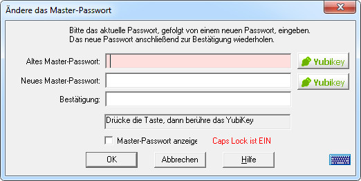

Um ein Master-Passwort ("Safe Combination") zu ändern, muss zuerst die Datenbank, deren
Passwort geändert werden soll, geöffnet werden. Einmal geöffnet, gehen Sie zum Menü
Verwalten und wählen Sie Master-Passwort ändern aus. Folgender Dialog wird dann
angezeigt:

Hinweis: Wenn Sie kein YubiKey haben, werden die
YubiKey Tasten nicht angezeigt, und Sie können die untenstehende Beschreibung überspringen.
Um ein Master-Passwort zu ändern, muss zuerst die Datenbank, deren Passwort geändert werden
soll, geöffnet werden. Einmal geöffnet, gehen Sie zum Menü Verwalten und wählen Sie
Master-Passwort ändern aus. Sie sollten das derzeitige und dann zweimal das neue
Master-Passwort zur Bestätigung eingeben. Zur Eingabe kann auch die virtuelle Tastatur
verwendet werden.
Password Safe hat eine eingebaute Prüfung auf vermeintlich schwache Passwörter. Im
Allgemeinen sollte ein Master-Passwort (wie jedes andere Passwort auch) aus einem Mix von
Buchstaben und mindestens einer Ziffer oder einem Speziellen Zeichen (wie
die Zeichen, die sich über Ziffern auf der Tastatur befinden) bestehen. Wenn das Programm ein
eingegebenes Master-Passwort als schwach einstuft, wird eine Bestätigung angefordert. Sie
haben dann die Wahl das original eingegebene (schwache) Master-Passwort anzunehmen, oder ein
Neues einzugeben.
Für YubiKey Anwender:
Zusätzlich zum Ändern des Master-Passwortes wie oben beschrieben, können Sie in diesem Dialog
die YubiKey Authentifizierung hinzufügen oder entfernen, eine zusätzliche Authentifizierung
hinzufügen oder entfernen, als auch den YubiKey umschalten der für den Zugang zur Datenbank
eingesetzt wird. Hiernach werden die einzelnen Aktionen detailliert beschrieben:
YubiKey Authentifizierung hinzufügen
Der Zugang zur Password Safe Datenbank ändern vom Einsatz eines Master-Passwortes zu
YubiKey:
Geben Sie das laufende Master-Passwort im Feld 'Altes Master-Passwort' ein.
YubiKey einstecken.
Wenn Sie wünschen, geben Sie ein Passwort im Feld 'Neues Master-Passwort' ein und
bestätigen dies in Feld 'Bestätigung'.
Drücken Sie die untere Yubikey Taste, und aktivieren Sie dann Ihr
YubiKey.
YubiKey Authentifizierung entfernen
Der Zugang zur PasswordSafe Datenbank so ändern dass nur ein Master-Passwort benötigt wird:
YubiKey einstecken.
Wenn Sie momentan ein Master-Passwort im Einsatz haben, geben Sie es im Feld 'Altes
Master-Passwort' ein.
Drücken Sie die obere Yubikey Taste, und aktivieren Sie dann Ihr
YubiKey.
Geben Sie im Feld 'Neues Master-Passwort' das neue Master-Passwort ein und bestätigen
dies in Feld 'Bestätigung'.
Password Safe kann YubiKey als einziger Zugang benutzen, oder zusammen mit einem
konventionellen Passwort. Zum Wechseln von einem zum anderen:
YubiKey einstecken.
Wenn Sie momentan ein Master-Passwort benutzen, geben Sie es im Feld 'Altes
Master-Passwort' ein.
Drücken Sie die obere Yubikey Taste, und aktivieren Sie dann Ihr
YubiKey.
Setzen Sie das 'Neue Master-Passwort' (und die Bestätigung) auf den gewünschten Wert:
Leer um das Passwort zu entfernen, oder ein neues Master-Passwort zum hinzufügen oder ändern.
Drücken Sie die untere Yubikey Taste, und aktivieren Sie dann Ihr
YubiKey.
YubiKey Ändern
Um von einem YubiKey auf einem anderen zu wechseln:
Den alten YubiKey einstecken.
Wenn Sie auch ein Master-Passwort einsetzen, geben Sie es im Feld 'Altes Master-Passwort'
ein.
Drücken Sie die obere Yubikey Taste, und aktivieren Sie dann Ihr
YubiKey.
Entfernen Sie den alten YubiKey, und setzen den neuen ein.
Wenn Sie es wollen, geben Sie im Feld 'Neues Master-Passwort' ein Master-Passwort ein und
bestätigen dies in Feld 'Bestätigung'.
Drücken Sie die untere Yubikey Taste, und aktivieren Sie dann Ihr
YubiKey.
Hinweise:
Bemerkung: Es besteht keine Möglichkeit
in Password Safe verlorene oder vergessene Passwörter wieder
aufzufinden.
Dies wurde im Konzept bewusst so entschieden, weil jede Art Passwortwiederherzustellung
auch eine Sicherheitslücke darstellt.
Wählen Sie bitte ein schwer zu erratendes Passwort. Ein triviales Passwort wie
"passwort" oder Ihr Name wäre einfach zu erraten und würde damit die Sicherheit, die
Password Safe bietet, zuwiderlaufen.